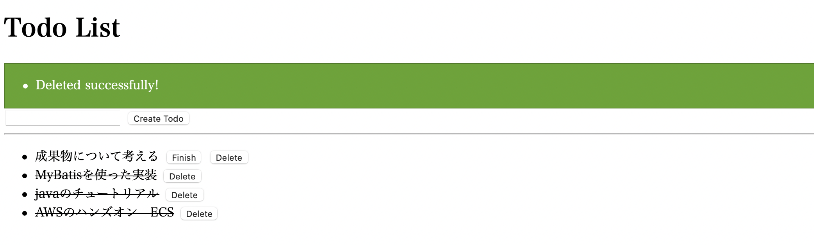
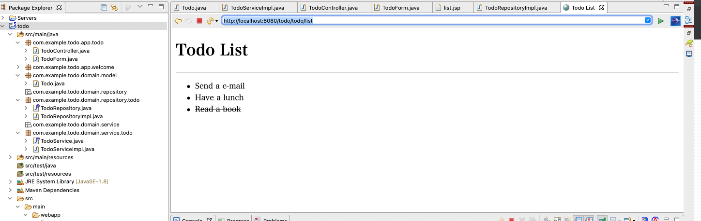

1. 塾の活動¶
1.1. DONE¶
sphinx環境構築
githubアカウント作成
javaspringは私用のパソコンでstsを構築
dockerコンテナ環境構築
java環境をdockerコンテナに固める手順整理
開発環境図整理
TERASOLNA チュートリアル11.1実施
H4B CICD
CodeArtifactの勉強
テーマについて考える
H4B ECS
H4B Lambda+S3+AI
H4B AutoScaling
TERASOLNA チュートリアル11.1完了
TERASOLNA チュートリアル11.2実施中
TERASOLNA チュートリアル11.2(REST)完了
TERASOLNA チュートリアル11.4(SECURITY)着手
マイクロサービスアーキテクチャについて勉強（一旦OauthとかOPENID Connectとか勉強）
中間報告資料作成
TERASOLNA11.3(セッション)さらっと
マイクロサービスの全体像勉強→「マイクロサービスからモノリスへ」→通読
マイクロサービスの全体像勉強→「マイクロサービスインアクション」→読み始め
マイクロサービスの認証認可の勉強→ブログとか動画とかを一通りみたのでだいぶスッキリ
AWS ディベロッパーアソシエイト第２章→ CICDとか構築自動化とか、CFN/SAMとか
AWS ディベロッパーアソシエイト第3章→ IAMとかSTSとか
CFNのH4B
SAMのH4B
最終報告資料の作成（10%)→テーマ名を変更した方がいいかも
認証認可についてLogsで整理した。
タイトルのアップデート含めて事前活動計画シートを更新
最終報告資料を作成（40%)
マイクロサービスの全体像勉強→「マイクロサービスインアクション→読み始め
AWS ディベロッパーアソシエイト第4章勉強（開発系
最終報告資料を作成（70%)
マイクロサービスの全体像勉強→「マイクロサービスインアクション→読めてない
Javaの構築とSTSについて整理する【完】
-
アプリケーションは作成【完】（localhostで動作確認済み)
Dockerコンテナで実行【完】（コンテナ間で通信確認済み）
ECS上に構築【完】（ECS上で通信確認済み）demo
Cognitoを利用したAuth2.0の実装【中】spring PJを改良していく予定
CICDの仕組み構築【完】（githubへのpushからECSのリリースまで動作確認済み）
AWS ディベロッパーアソシエイト勉強中→演習中
1.2. テーマ¶
マイクロサービスの基本とAWSサーバレスサービスとコンテナサービスを活用した構築ノウハウの整理
1.2.1. 背景¶
マイクロサービスを構築する上でのニーズとそのニーズを満たすAWSサービスや機能の対応とその実装上の注意を整理する。自分で実装するもしくは、HandsOnのような形式にして、他の人に展開できるようにする。
1.2.2. 自分の興味¶
新しいことを理解したい。理解したことを整理したい。理解したことを難しいことをやっていないことを伝えたい。
1.2.3. やる価値¶
マイクロサービスアーキテクチャをサーバーレスサービスやコンテナサービスを使ってAWS上で構築することはニーズとして多い。やりたいけど、どう始めればいいかわからない。案件としては進んでいるけど、自分自身の理解が薄いという人って多いのでは？少なくとも自分もそうだった。
マイクロサービスにおける技術的なニーズを満たすために、AWSはサービスを拡充している面もあるはず。マイクロサービスに必要な機能とそれを実装するときのベストプラクティス（デファクトスタンダード）的なAWSサービスを整理して提供することは、そういった案件に効果的にも効率的にも寄与しえるのでは？
1.3. 実行計画¶
1.3.1. 11月：チュートリアル期間¶
TERASOLNA チュートリアル【75】
11.1:完了
11.2:完了
11.4:0%
11.3:完了
H4B 興味あるもの
CICD【済】
ECS【済】
Lambda【済】
AutoScaling【済】
AIサービス【済】
1.3.2. 12月：チュートリアル期間＋テーマに沿った調査¶
マイクロサービスについての整理
全体像【済】
メリット【済】
デメリット【済】
必須要件【済】
認証認可【済】
コンテナサービス【済】
CICD【済】
1.3.3. 1月：テーマに沿った実装期間¶
アプリ実装【済】
コンテナサービス実装【済】
CICD実装【済】
認証認可実装
成果物作成【中】
1.3.4. 2月：バッファ¶
多分上記が計画通りにいかない
1.3.5. 3月：報告準備期間¶
バッファ＋報告準備
1.4. 1/20-2/¶
詳細は Artifact のページ
1.5. 1/7-1/20¶
1.5.1. 認証認可についてLogsで整理した。¶
OAuthとOIDC周りの知識は一通り整理できた。
1.5.2. タイトルのアップデート含めて事前活動計画シートを更新¶
RVをお願いしたい。
1.5.3. 最終報告資料を作成（40%)¶
chap1は自己紹介なので中間報告資料を流用
chap2は、読んだ本や記事の情報からざっくり書きたいことを整理した。
chap3は、作成したい環境の全体像を作成した。 ECSのHandsOnを通じて作成するものとCICDはストーリーとして見えているのでその周辺はざっくり書いた。
1.5.4. APIGWとLambdaのHandsOn¶
Springの勉強とDVAの勉強で試そうと思ったが、 SpringのPJの始め方がで詰まる・・・・
1.5.5. ECS構築HandsOn¶
VPCとALBの構築などに着手。完了 Dockerの中身のアプリケーション開発したいが、Springのスタートで詰まっている。。。
1.5.6. 相談事項¶
■質問1
SAMLはOIDCと同じ認証のプロトコルで、SAMLの方が複雑で、OIDCはシンプルなのでSNSなどで利用という理解。
OIDCやOAuthを利用するとSSOが実現できて、マイクロサービスにおける認証の煩雑性をなくすことができるという理解なのだが、合っている？
■質問2
APIGWとLambdaのHandsOnを実施してみて、PJの基本的な始め方がよくわかっていない・・・
Spring InitializerからPJを始めたが、以下の問題発生。
STSの再インストールとJavaのバージョンを見直し中
Run on Serverできない(Tomcatもインストールしてみた)
→JDKとJREの設定見直し中pomの更新でエラー
可能なら最初の一歩どなたかと一緒にやれるとありがたい。
1.6. 12/17-1/6¶
1.6.1. マイクロサービスの全体像勉強¶
モノリスからマイクロサービスへのchap1を読んでいる。 とりあえず通読。技術的なところは少なかったけど、マイクロサービスの定義とか、マイクロサービスのメリットは整理出来なので、報告資料のイントロら辺はかけそう。 あとは、デメリットからどういった対策が必要かという流れでAWSのサービスの話に転じていけそう。 サービス管理の話→コンテナオーケストレーション・分散するログの話から→ログ集約やトレーシング。 DB周りの考え方についてはかなり根が深そうなので、別機会にした。
引き続き、マイクロサービスインアクションも読んでみて理解を深める。 深掘りし過ぎずに、必要なポイントをつまむイメージで。
1.6.2. TERASOLNA11.3(セッション)¶
全体像はざっくり読んで理解。 まずはセッション管理の対象を洗い出して、本当にセッションが必要か、セッションが必要ならどのように管理・破棄するか決めてから実装する。
実装しようとしたところで、importするとRun on Serverが出てこない・・・？ 一旦はチュートリアルおしまいで良いかな・・・
→web APPとして認識されていない可能性がある。
1.6.3. AWS ディベロッパーアソシエイト（第２/3章）¶
CICDの部分は実装経験もあったので復習になった。 CloudFormation・SAMは経験なかったのでHands-onを追加で受けてみた。 ElasticBeanstalkはHands-onがないので違いが明確化されていないけど、アプリケーションの形になっているものをテンプレートから選ぶ形で、CloudFormationやSAMの方が自由度高く、自分が立ち上げたいものを作成できるイメージ
IAMとかSTSを改めて学習。 AssumePolicyについて理解できた。他のアカウントとの連携は実業務でもありそうなので良い予習になった。
1.6.4. CFNとSAMの勉強¶
大雑把にCFNの文法を理解 あとは、実際に自分で何か作る経験を踏むことができれば、使えるようになりそう。
1.6.5. マイクロサービスの認証認可の勉強¶
youtube上の動画で非常にわかりやすいものがあった 一通り理解できたつもりなので、最後にsphinx上で集めた情報を整理する予定
1.6.6. 最終報告資料作成¶
一旦、目次を考えてみた。 今回の学習できた範囲を考えると以下の内容でどうだろうか。マイクロサービスの根幹っぽいところには触れられるのでは？
マイクロサービスの簡単な概要
マイクロサービスにおける認証認可の重要性
認証認可の仕組みとCognitoを利用した実装
マイクロサービスにおけるコンテナ開発（CICD）の重要性
コンテナ開発とCICDの仕組みとECSおよびCodeSeriesを利用した実装
1.6.7. 相談¶
最終報告までに一通り実装をするとした、AWSで作るマイクロサービス AWS周りはなんとかなるような気がするけど、Spring周りがついて行けなさそう。 レベル的に大丈夫？？
タイトルについて変更したい
「コンテナサービスおよびサーバレスサービスを活用した高速なアプリケーション開発環境の構築の整理」
↓↓↓
「マイクロサービスの基本とAWSサーバレスサービスとコンテナサービスを活用した構築ノウハウの整理」
1.7. 11/25-12/16¶
1.7.1. TERASOLNA 11.2¶
深追いせずに、全体像を把握するように実装した。 HTTPメソッドに対応するアノテーションがあるので、実装はシンプルにできる印象を受けた。 基本方針は、todoResource型でやり取りしつつ、処理はtodo型でやる。 todoResource型はJSONに変換するように設定を入れているので、RESTFulにやり取りできるっぽい
1.7.2. TERASOLNA 11.4¶
深追いせずに、全体像を把握するように実装した。
全体的には理解できた気がするが、自分一人で実装ができる気はしない・・・
実装されているものを解説みながら理解できるレベル感。
認証認可の部分で、/とwelcome/home.jspの対応づけがどこで定義されているかよくわからない。
1.7.3. マイクロサービスに関する整理（認証認可¶
マイクロサービスの認証認可について勉強しようとOauthとOpenIDConnectの記事を漁る。 OAuth2.0は認可の仕組みで認証しないところが問題点。OAuth認証なんてものをするとセキュリティホールが生まれるっぽい。 そこを解決したのがOIDCで、ID Tokenで認証情報を改ざん不可能にしている。 その辺まではなんとなくわかった。じゃあ、OIDCが単独でいい。となりそうだけど、そうなっていない感じがよくわからない。
あとは、SSOとかSAMLとかkeycloakとかoktaとかCognitoは結局何物かは整理できていない。 マイクロサービスではどう使えば良いのかとかCognitoを使えば、いい感じにできるよーみたいなことを確認したい。
UA,SiteA,Authz,GraphAPIとかに、各マッピングしてみると良いかも
1.7.4. マイクロサービスに関する整理¶
モノリスからマイクロサービスへのchap1を読んでいる。 マイクロサービスアーキテクチャとは独立デプロイできることを取り込むことが一番のポイント 独立デプロイできる→ CICD→改善を繰り返して提供価値を上げる？→ フィードバックの機構とかって対象じゃないのかな？
1.7.5. 取り上げたいサービス¶
Cognito
ECS/EKS
CodeSeries
X-ray
1.8. 11/4-11/24¶
1.8.1. java チュートリアル (7h)¶
DIとAOPの理解
動画見てだいぶスッキリした。
DIはコンテナでBean（インスタンス）を管理して、インスタンスの受け渡しを担うことでメソッド間を疎結合にする。という理解。
あとは、実際に使いながら理解を深める
TODOアプリの作成 実装完了(MyBatisを利用したインフラ層実装まで)

1.8.2. AWS ECSのH4B(4h)¶
今までもやったことがあったが、良い復習になった。 fargateからの起動方法が新規で理解できた。 task定義とサービス定義でFargateで起動する設定を行う。
1.8.3. AWS LambdaのH4B 他サービスの連携(3h)¶
S3アップロードをイベントを契機として、Lambdaで他のサービスと連携するHandsOn
1.8.4. わからなかったところ¶
1.8.4.1. ECS¶
ECSのEC2・FargateそれぞれでメモリやCPUがどのように配分されるかは整理しても良いかなと思った。
1.8.4.2. Mapper beanMapperの役割について¶
TodoControllerの実装中で登場するbeanMapper君が何者かわからない。
多分処理的には、object型の変換をしている todoFormはtodoTitleを持っていて、Todo.classにもあるからObjectを変換している。 他のプロパティは空っぽで変換してくれて、後続のcreateメソッドでプロパティを追加しているっぽい。
Q1.なんでInjectしているのか不明。。。import で使うのとは別なの？？
@Inject
Mapper beanMapper;
Todo todo = beanMapper.map(todoForm, Todo.class);
1.8.4.3. Controllerとjspでの変数のやり取りについて¶
①titleのnullチェックは文字数チェックのエラー結果はbindingResultにある
bindingResult.hasErrors()
②serviceに書かれた業務エラー（５個以上のTodo）はmodelにある
Q2.modelってkey-valueな気がするのに、keyを指定しない理由がわからない
try {
todoService.create(todo);
} catch (BusinessException e) {
// (7)
model.addAttribute(e.getResultMessages());
return list(model);
}
③処理成功はattributesにある
// (8)
attributes.addFlashAttribute(ResultMessages.success().add(
ResultMessage.fromText("Created successfully!")));
return "redirect:/todo/list";
}
jsp側での処理では、messagePanelがResultMessagesを表示させるので、②と③は表示されるらしい。
<t:messagesPanel />
Q3. modelとAttribute違う場所にあるけど、jspに渡ってきているの？ しかも異なる変数のなか（modelとattribute)にあるResultMessagesから勝手にみてきてくれるの？
①の表示はform:errorsが担っているっぽい
<form:errors path="todoTitle" /><!-- (4) -->
@modelAttributeで指定したtodoFormのプロパティにtodoTitleがある。
Q4.todoTitleのValidチェックがform:errorsでエラーで結果を表示できるの？？
1.8.4.4. Mybatsを利用した実装¶
RepositoryImplでは@RepositoryでBeanにしていたからコンテナでDIしてくれていたけど、
Q5. Repository.xmlでは@付与をしていないのでは？勝手にBeanにしてくれるの？
TodoServiceImplでInjectしているけど、@Repositoryがなくなったので、 コンポーネントスキャンされていない。 DIコンテナの中にBeanがないのではないか？
@Inject// (3)
TodoRepository todoRepository;
ここの部分は、SQLの結果とDomain/modelのプロパティを紐づけているだけっぽいし
<resultMap id="todoResultMap" type="Todo">
<id property="todoId" column="todo_id" />
<result property="todoTitle" column="todo_title" />
<result property="finished" column="finished" />
<result property="createdAt" column="created_at" />
</resultMap>
この辺の処理は、Interfaceとの紐付けをおこなっているだけっぽい。
<select id="findById" parameterType="String" resultMap="todoResultMap">
1.9. 10/31-11/3¶
1.9.1. java チュートリアル 7h¶
動作確認まで完了。mvnarchetype:generateコマンドやMVCの基本を整理 sts4.xをインストールしていることに気づいて、sts3.xをインストール ここで、立ち上がらない問題やrun on serverがでないなどのトラブルで時間をだいぶ使った。 javaのバージョンを変えたりstsのiniファイル編集したりして対応 serverがでなかったのはワークスペースの設定も悪かった？？
tutorialでドメイン部分の作成まで完了。Appの方も少しだけ作成して、一覧表示まではできた。 今までは何もわかっていなかったところからお作法とかは少しずつわかってきた。 細かいアノテーションの意味とかは調べつつ。。。わからないところはメモしている

1.9.2. AWS code artifact勉強(3h)¶
じつ業務の方で利用する機会があったので勉強した。
jarファイルなどの成果物を共有することができるリポジトリ。
curlコマンドでアップロードはできたが、mvn deployはできていない。
実際のアプリの時に使ってみて、使い方を整理したい。
1.9.3. わからなかったこと¶
sts4でやったからか、run on serverがなくて困った【解決】
sts3をインストールし直して、javaのバージョンも1.8に変えた
PJを開く場所をデフォルトにしたらうまくいった
CodeArtifactへの登録をmvn deployからできなかった【宿題】
stsだとmvn deployはどこからするの？
repositoryとserviceで定義するメソッドについて【解決】→アプリケーションのレイヤと役割
repositoryはCRUD処理のうちで使うもの
serviceは業務ロジックとして使うもの？チュートリアルはいいけど何を作るのかの定義が大事？
@injectって何？いくつか記事を読んでみたけど、まだよくわからない。【解決】→- DIとAOPの神動画